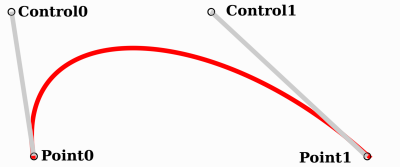
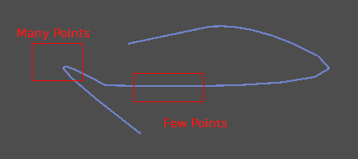

Bezier, đường cong và đường đi
Đường cong Bezier là một phép xấp xỉ toán học cho các hình dạng hình học tự nhiên. Chúng ta dùng chúng để biểu diễn một đường cong với càng ít thông tin càng tốt và với mức độ linh hoạt cao.
Khác với các khái niệm toán học trừu tượng hơn, đường cong Bezier được tạo ra cho thiết kế công nghiệp. Chúng là một công cụ phổ biến trong ngành phần mềm đồ họa.
Chúng dựa trên nội suy mà ta đã thấy ở bài trước, kết hợp nhiều bước để tạo ra các đường cong mượt. Để hiểu rõ hơn cách đường cong Bezier hoạt động, hãy bắt đầu từ dạng đơn giản nhất của nó: Bezier bậc hai.
Bezier bậc hai
Lấy ba điểm, số lượng tối thiểu cần thiết để Bezier bậc hai hoạt động:

Để vẽ một đường cong giữa chúng, trước tiên ta nội suy dần dần trên hai đỉnh của mỗi đoạn trong hai đoạn thẳng tạo bởi ba điểm, với các giá trị từ 0 đến 1. Kết quả là hai điểm di chuyển dọc theo các đoạn thẳng khi ta thay đổi giá trị t từ 0 đến 1.
func _quadratic_bezier(p0: Vector2, p1: Vector2, p2: Vector2, t: float):
var q0 = p0.lerp(p1, t)
var q1 = p1.lerp(p2, t)
private Vector2 QuadraticBezier(Vector2 p0, Vector2 p1, Vector2 p2, float t)
{
Vector2 q0 = p0.Lerp(p1, t);
Vector2 q1 = p1.Lerp(p2, t);
}
Sau đó ta nội suy q0 và q1 để thu được một điểm duy nhất r di chuyển dọc theo một đường cong.
var r = q0.lerp(q1, t)
return r
Vector2 r = q0.Lerp(q1, t);
return r;
Loại đường cong này được gọi là đường cong Bezier bậc hai (Quadratic Bezier).

(Nguồn ảnh: Wikipedia)
Bezier bậc ba
Dựa trên ví dụ trước, ta có thể kiểm soát nhiều hơn bằng cách nội suy giữa bốn điểm.

Trước tiên ta dùng một hàm có bốn tham số để nhận bốn điểm làm đầu vào, p0, p1, p2 và p3:
func _cubic_bezier(p0: Vector2, p1: Vector2, p2: Vector2, p3: Vector2, t: float):
public Vector2 CubicBezier(Vector2 p0, Vector2 p1, Vector2 p2, Vector2 p3, float t)
{
}
Ta áp dụng nội suy tuyến tính cho từng cặp điểm để rút gọn chúng còn ba:
var q0 = p0.lerp(p1, t)
var q1 = p1.lerp(p2, t)
var q2 = p2.lerp(p3, t)
Vector2 q0 = p0.Lerp(p1, t);
Vector2 q1 = p1.Lerp(p2, t);
Vector2 q2 = p2.Lerp(p3, t);
Sau đó ta lấy ba điểm này và rút gọn chúng còn hai:
var r0 = q0.lerp(q1, t)
var r1 = q1.lerp(q2, t)
Vector2 r0 = q0.Lerp(q1, t);
Vector2 r1 = q1.Lerp(q2, t);
Và còn một:
var s = r0.lerp(r1, t)
return s
Vector2 s = r0.Lerp(r1, t);
return s;
Đây là hàm đầy đủ:
func _cubic_bezier(p0: Vector2, p1: Vector2, p2: Vector2, p3: Vector2, t: float):
var q0 = p0.lerp(p1, t)
var q1 = p1.lerp(p2, t)
var q2 = p2.lerp(p3, t)
var r0 = q0.lerp(q1, t)
var r1 = q1.lerp(q2, t)
var s = r0.lerp(r1, t)
return s
private Vector2 CubicBezier(Vector2 p0, Vector2 p1, Vector2 p2, Vector2 p3, float t)
{
Vector2 q0 = p0.Lerp(p1, t);
Vector2 q1 = p1.Lerp(p2, t);
Vector2 q2 = p2.Lerp(p3, t);
Vector2 r0 = q0.Lerp(q1, t);
Vector2 r1 = q1.Lerp(q2, t);
Vector2 s = r0.Lerp(r1, t);
return s;
}
Kết quả sẽ là một đường cong mượt nội suy giữa cả bốn điểm:

(Nguồn ảnh: Wikipedia)
Ghi chú
Nội suy Bezier bậc ba hoạt động tương tự trong 3D, chỉ cần dùng Vector3 thay vì Vector2.
Thêm điểm điều khiển
Dựa trên Bezier bậc ba, ta có thể thay đổi cách hoạt động của hai điểm để tự do điều khiển hình dạng của đường cong. Thay vì có p0, p1, p2 và p3, ta sẽ lưu chúng dưới dạng:
point0 = p0: Là điểm thứ nhất, điểm nguồncontrol0 = p1 - p0: Là một vector tương đối với điểm điều khiển thứ nhấtcontrol1 = p3 - p2: Là một vector tương đối với điểm điều khiển thứ haipoint1 = p3: Là điểm thứ hai, điểm đích
Bằng cách này, ta có hai điểm và hai điểm điều khiển là các vector tương đối với các điểm tương ứng. Nếu bạn từng dùng phần mềm đồ họa hoặc hoạt ảnh, điều này có thể trông quen thuộc:

Đây là cách phần mềm đồ họa trình bày đường cong Bezier cho người dùng, và cũng là cách chúng hoạt động và hiển thị trong Godot.
Curve2D, Curve3D, Path và Path2D
Có hai đối tượng chứa đường cong: Curve3D và Curve2D (lần lượt cho 3D và 2D).
Chúng có thể chứa nhiều điểm, cho phép tạo các đường đi dài hơn. Cũng có thể gán chúng cho các node: Path3D và Path2D (cũng lần lượt cho 3D và 2D):

Tuy nhiên, cách sử dụng chúng có thể không hoàn toàn rõ ràng, vì vậy dưới đây là mô tả các trường hợp sử dụng phổ biến nhất của đường cong Bezier.
Tính giá trị
Chỉ tính giá trị của chúng cũng là một lựa chọn, nhưng trong hầu hết trường hợp thì không mấy hữu ích. Nhược điểm lớn của đường cong Bezier là nếu bạn duyệt qua chúng với tốc độ không đổi, từ t = 0 đến t = 1, thì phép nội suy thực tế sẽ không di chuyển với tốc độ không đổi. Tốc độ cũng là một phép nội suy giữa khoảng cách các điểm p0, p1, p2 và p3, và không có cách đơn giản về mặt toán học nào để duyệt đường cong với tốc độ không đổi.
Hãy làm một ví dụ với đoạn mã giả sau:
var t = 0.0
func _process(delta):
t += delta
position = _cubic_bezier(p0, p1, p2, p3, t)
private float _t = 0.0f;
public override void _Process(double delta)
{
_t += (float)delta;
Position = CubicBezier(p0, p1, p2, p3, _t);
}

Như bạn thấy, tốc độ (tính bằng pixel mỗi giây) của hình tròn thay đổi, dù t được tăng với tốc độ không đổi. Điều này khiến bezier khó dùng ngay cho bất kỳ việc gì thực tế.
Vẽ
Vẽ bezier (hoặc các đối tượng dựa trên đường cong) là một trường hợp sử dụng rất phổ biến, nhưng cũng không dễ. Trong hầu hết mọi trường hợp, đường cong Bezier cần được chuyển thành một dạng đoạn thẳng nào đó. Tuy nhiên, việc này thường khó thực hiện nếu không tạo ra một số lượng đoạn rất lớn.
Lý do là một số phần của đường cong (cụ thể là các góc) có thể cần một lượng điểm đáng kể, trong khi các phần khác thì không:

Ngoài ra, nếu cả hai điểm điều khiển đều là 0, 0 (hãy nhớ chúng là các vector tương đối), đường cong Bezier sẽ chỉ là một đường thẳng (nên vẽ một lượng điểm lớn sẽ rất lãng phí).
Trước khi vẽ đường cong Bezier, cần thực hiện tessellation. Việc này thường được làm bằng một hàm đệ quy hoặc chia để trị, chia nhỏ đường cong cho đến khi độ cong nhỏ hơn một ngưỡng nhất định.
Các lớp Curve cung cấp tính năng này qua hàm Curve2D.tessellate() (nhận các tham số tùy chọn stages cho số tầng đệ quy và tolerance cho dung sai góc). Bằng cách này, việc vẽ thứ gì đó dựa trên đường cong trở nên dễ dàng hơn.
Duyệt đường cong
Trường hợp sử dụng phổ biến cuối cùng của đường cong là duyệt qua chúng. Vì lý do đã đề cập trước đó về tốc độ không đổi, việc này cũng khó.
Để việc này dễ hơn, các đường cong cần được bake thành các điểm cách đều nhau. Bằng cách này, chúng có thể được xấp xỉ bằng nội suy thông thường (có thể cải thiện thêm bằng tùy chọn bậc ba). Để làm việc này, chỉ cần dùng phương thức Curve3D.sample_baked() cùng với Curve2D.get_baked_length(). Lần gọi đầu tiên tới bất kỳ phương thức nào trong số đó sẽ bake đường cong bên trong.
Khi đó, việc duyệt với tốc độ không đổi có thể thực hiện bằng mã giả sau:
var t = 0.0
func _process(delta):
t += delta
position = curve.sample_baked(t * curve.get_baked_length(), true)
private float _t = 0.0f;
public override void _Process(double delta)
{
_t += (float)delta;
Position = curve.SampleBaked(_t * curve.GetBakedLength(), true);
}
Và khi đó, kết quả sẽ di chuyển với tốc độ không đổi: